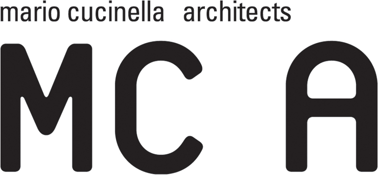
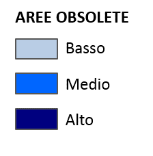
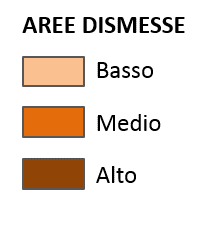

GRADO DI OPERATIVITA'
 
BERGAMO
Obsoleto
Dismesso
Area Ex Gres
Edifici Dismessi
Edifici in progetto (Concept Generale)
VISION
DELLA RIGENERAZIONE URBANA
ANALISI TERRITORIALE
1. DEFINIZIONE STRATEGIE
POLICENTRISMO E RETICOLARITÀ
Mondializzazione
Urbanità
Schema Sviluppo Spazio Europeo
EVOLUZIONE ABITARE URBANO
Valore sinergico sport/natura
Verde agricolo urbano
2. ANALISI TESSUTI STORICI
CORPI SANTI
Evoluzione Corpi Santi
Rapporto con la città
Colognola e la ferrovia nell'800
ESPANSIONE URBANA
Gres e Colognola nel 1930
Espansione urbana: 1950 - 1994
SISTEMA IDROGRAFICO
Sistema delle rogge
Paleoalveo del torrente Morla
USO DEL SUOLO STORICO
Catasto austriaco 1853
Cartografia I.G.M. 1889-1971
3. CRITICITÀ PERIFERIA SUD-OCCIDENTALE
EDIFICI DISMESSI-OBSOLETI VICINO EX GRES
ERP obsoleta e aree dismesse
Ricentramento del metodo RIFO
ANALISI VERDE URBANO E MOBILITÀ
Parchi, aree verdi e orti urbani
Mobilità pubblica e green
Criticità della mobilità
Progettualità green: "parco lineare"
PROGETTUALITA' EX-GRES
1. LA POLARITÀ DEL PALAGHIACCIO
2. LA RETICOLARITA' SLOW
SCENARIO PROGETTUALE
ANALISI CLIMATICHE
STRATEGIE DI INTERVENTO
Confini Comunali
Strade Google Earth
Toponimi Google Earth
Latitudine, Longitudine
Help